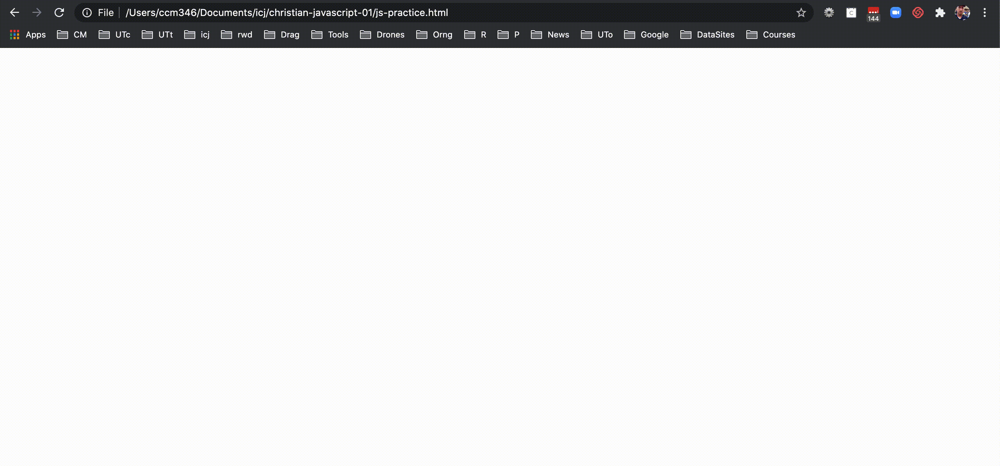

12 JavaScript basics
There are a series of videos that are companions to this lesson. Find them in Canvas under Panopto Video. They are numbered in order.
JavaScript is the programming language of the browser. We’re going to practice using JavaScript by manipulating numbers, strings and making functions and seeing the result in our browser Console.
The browser Console is a way for us to interact with JavaScript: We can see results of code through a “console log” or we can even write code there, but we’ll mainly write in an HTML file and write to the console log.
I’ll be using Chrome in class, so it might be helpful to do the same. Safari, Firefox and Edge do work and have all the tools necessary, but it might be easier to follow along if you use Chrome.
12.1 Learning objectives
- Practice basic programming concepts: data types, variables and functions.
- Use the browser console to interact with Javascript.
- Apply learned Javascript as a working example in a browser.
- Use pre-written Javascript to build more advanced functionality.
12.2 Set up your project
- Create a new project folder called
yourname-javascript. Create and connect with a new Github repo of the same name. Include a README and .gitignore file. - You’ll need to create a new HTML file (call it
js-practice.html) with the HTML5 boilerplate.
Like CSS, you can write Javascript either in an HTML page, or in a separate file and link to it. We will be typing all our code within a <script> tag inside the body of our HTML page. Mark the answers for each question using JavaScript’s comment syntax. As you see below, there are two ways to write a JavaScript comment:
<script>
// This is a comment
let somecode = 'this code';
/*
FYI: this is a comment, too
but it can be on more then one line
*/
</script>You’ll test all of our code by opening this page with a browser window and then looking at the Inspector’s Console window. The Console is one way we can interact with JavaScript in a browser, and vise versa.
To get started:
- Once you’ve created your
js-practice.htmlfile, add this code inside it:
<!DOCTYPE html>
<html lang="en">
<head>
<meta charset="UTF-8">
<meta name="viewport" content="width=device-width, initial-scale=1.0">
<title>JavaScript practice</title>
</head>
<body>
<script>
// Your code will go here
</script>
</body>
</html>- Save your file
- In your browser, open your
js-practice.htmlpage. It will be blank. That’s OK. - Right-click (control-click on Mac) in the middle of the page and choose Inspector.
- When then Inspector loads, click on the Console tab.
- You can close any other little windows that pop up.

Let’s log some text to the Console so you can see it work.
- In your HTML file between the script tags, on a line by itself, add this:
console.log("Let's do math:");- Save your
js-practice.htmlfile. - Go back to your browser and refresh it and you should see the log print in the console.

Note we used double-quotes to signify our string. Just so you know, we could use single quotation marks if we are consistent, but then we would’ve needed to escape the single quote in the text as Let\'s.
12.3 Writing to the console
- Under your first console.log, use
letto create a new variablexand set it to5. Logx’s value to the console. (We’ll talk aboutletand what a variable is below.)
let x = 5;
console.log(x);- Save your html page, then refresh your browser and you should see your console update to include the “5” in the log.
The browser will act on all our code written in JavaScript, in the order that we write it. You don’t actually see it happen, unless there is some result for you to see. We are using console.log to see that result.
We could actually type those commands into the browser Console, but anything we do would not be saved when the browser is refreshed.
12.3.1 var vs. let vs. const
Think of variables as containers that hold information. Their purpose is to label and store data that can then be used in your program. By providing a variable with a descriptive name, our programs can be understood more clearly by others and our future selves.
Until recently, the way to create (or instantiate) a variable in JavaScript was to use var variableName. In 2015 with the update to ES6, let and const were introduced as better ways of declaring variables. While not all features of ES6 are fully supported in all browsers, we should use these new terms.
Here are the very simplified differences between these three ways of declaring a variable:
- If you declare a variable with
var, you can re-declare it later and in doing so you will change its value. - If you declare a variable with
let, you can change its value later, but you can’t re-declare it. If you try, you will get an error. This is usually good, because it tells you the variable was already in use. - If you declare a variable with
const, you can’t change its value or re-declare it later.
Note that you can also declare a variable without using any of those by just assigning a value to term. x = 5. DON’T DO IT. It is not good practice, as you can overwrite global variables already in play, no matter where it is called. You can read more about calling variables in scope, but I don’t want to get bogged down with it here.
In our example above, we used let to declare a variable that we called “x”, and then we assigned that variable to the value “5”.
When we used console.log to print log our variable “x” to the screen, it returned our value: 5.
12.4 Let’s do some math in JavaScript
- Use
letto create a new variableyand set it to3. Logy’s value to the console.
let y = 3;
console.log(y);- Save your file and refresh your browser to make sure it worked.
- Create a new variable
zand set it toxmultipliedy, using thexandyvariables (don’t just use the numbers 3 and 5). Logz’s value to the Console. The character*is our your multiplication tool.
let z = x * y;
console.log(z);12.4.1 Math on your own
- Add a JavaScript comment called “Math on my own”.
- Repeat those last steps, but demonstrate addition (
+), subtraction (-) and division (/) using new variable names (notz) and values. These are three different new things, each logged to the Console. - Make sure they worked in your browser.
- Commit your changes to Github.
12.5 Working with strings
- Add a new console log with the text “Working with strings:”.
- Create separate variables for your first, middle and last name. Log each of them to the console.
(While any combination of letters could be used to create a variable name, note that convention is to use camelCase if your variable has more than one word, meaning the first letter of the variable name is lowercase, but you would uppercase the first character of other words in the variable name.)
console.log("Working with strings:");
let firstName = 'Christian';
let middleName = 'Clay';
let lastName = 'McDonald';- Use string concatenation (
+) to join the variables you just created into a new variable calledname. Make sure to include spaces in quotation marks between each name part. Log it to the console.
let name = firstName + " " + middleName + " " + lastName;
console.log(name)OK, we now have created a variable that has your entire name, built from other variables. Holler if you see that it doesn’t work in your browser.
12.5.1 Strings on your own
- Add a JavaScript comment with the text “Strings on my own”.
- Create a new variable,
greeting, and in it, join the string'My name is'together withnameso its new value is My name is YOUR NAME. Log that new value to the console. - Commit your changes to Github.